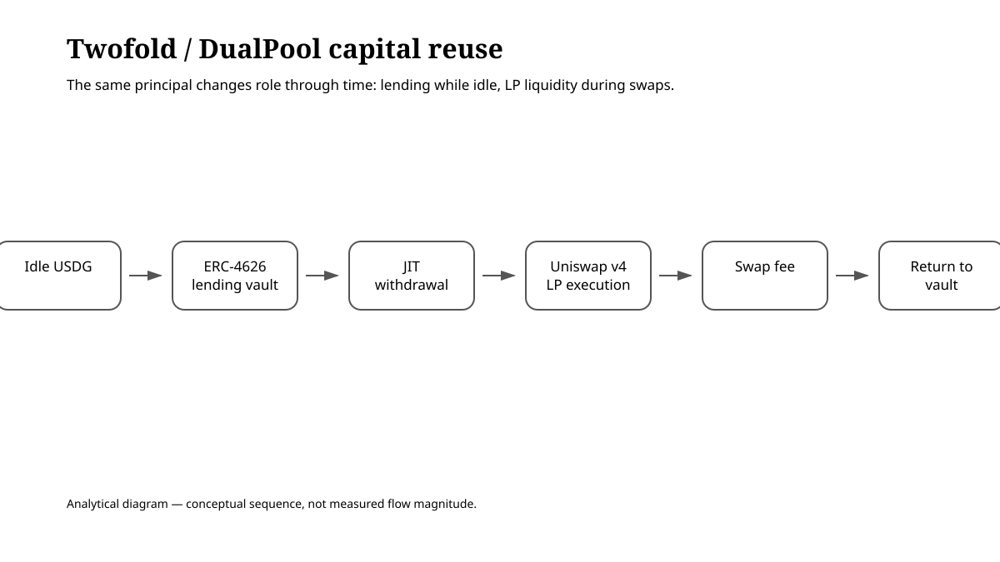
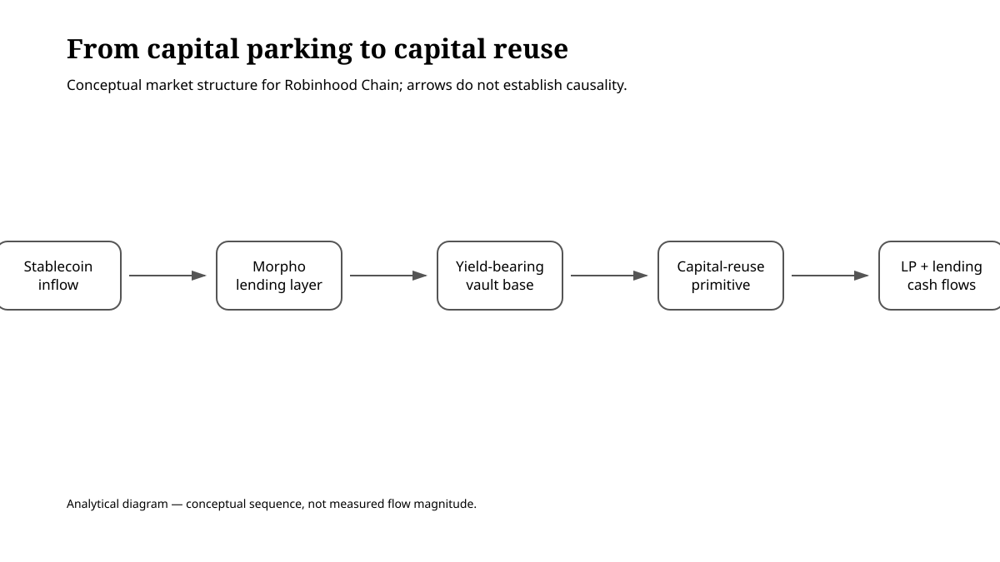

Summary
Twofold is implementing a capital-reuse model on Robinhood Chain using Uniswap v4’s DualPool hook. The USDG side of an LP position is deposited into a Morpho-linked Vault while it is idle, then withdrawn just in time when a swap requires liquidity. Instead of forcing liquidity providers to choose between lending and market making, the system shifts the same principal between the two roles over time, allowing it to participate in both borrower interest and swap fees.
As of 2026-08-31, Twofold’s current documentation listed the major contract addresses on Robinhood Chain (chain id 4663), including DualPoolHook, Factory, Registry, StakingVault, and the TWO token, and stated that the Registry contained 19 listings. The TWO token contract also showed live transaction activity. At the same time, an older Stats page still hosted on Twofold’s official website (twofold.fi/stats.html) retained the pre-launch statement “contracts are not yet deployed.” The current docs and app therefore conflict with a legacy page that appears not to have been fully updated.
That inconsistency matters, but it is not the same as evidence that the protocol is undeployed. What can be established at this stage is narrower: the contracts and Registry exist, deposits are open, and the deployment is live enough to inspect. What cannot yet be established with the same confidence is Twofold-specific aggregate pool TVL, swap volume generated by Twofold pools themselves, realized LP fees, or harvested protocol revenue. The current documentation explicitly states that no harvest has yet taken place and that protocol revenue from the pools is currently zero. This should therefore be read as a study of an early-stage capital-reuse primitive, not as a track record of realized high yield.
1. One pool of capital, two markets over time

When there is no swap demand, LP capital sits in an allowlisted ERC-4626 Vault. When a swap arrives, the hook withdraws the required amount within the same transaction, supplies liquidity to Uniswap v4, earns the trading fee, and then returns the remaining capital to the Vault.
The point is not that the same dollar is counted twice. The same principal changes jobs over time:
- While idle: it earns lending or Vault yield.
- During a swap: it earns LP fees.
- After the swap: it returns to the Vault.
That distinction matters. Unlike Tomb-style systems, where APR can depend heavily on emissions of a newly issued token, the intended revenue sources here are external borrower interest and trading fees.
2. Deployment is visible—but the official site still carries a stale Stats page
The current Twofold documentation lists the following principal contracts on chain id 4663:
- DualPoolHook:
0x127B3f3b7769f659C5eDBfF8b4005443f19FAAc0 - AllowlistedFactory:
0x92cbCe5d1f5b7018b98bE81a8B9d010B547F0c85 - OperatorController:
0xc7295643EC5414DE243e3F9810Eb28F85e5d9ABb - VaultAllowlist:
0xe44C0d41A1aFbF7234492bb7a3F745246c351C42 - Registry:
0x1b66DD14C9281A18E696dbdb40cFB5070842c0C2 - StakingVault:
0x06E463fDa4BEb4aA096142E673240aB9719fB3A9 - TWO token:
0x2A4a33A2163D005d8E7f1D9aC08d14c98db288d5 - Underlying Steakhouse USDG Vault:
0xBeEff033F34C046626B8D0A041844C5d1A5409dd
The current docs state that there are 19 pools/listings and that deposits are open. The TWO contract is shown by the explorer as a verified contract with transaction, Transfer, and Approval activity.
Yet Twofold’s own legacy Stats page (twofold.fi/stats.html) still contains the pre-launch statement “contracts are not yet deployed.” That mismatch should not be hidden. It means the official site contains pages from different stages of the project’s lifecycle, and a reader should not infer deployment status from a single UI surface.
For this article, the current contract Registry and explorer evidence take precedence over the stale Stats copy.
3. Pool TVL and fee generation are not yet equally verifiable
Twofold’s current home/app experience says it reads 19 pools from the Registry and describes each pool as charging a 0.30% swap fee. The displayed “pair volume, 24h,” however, is not Twofold-specific volume. The docs explicitly warn that it represents volume for the relevant pair across all Uniswap v4 pools on Robinhood Chain.
That means it would be incorrect to multiply the displayed pair volume by 0.30% and present the result as Twofold fee revenue.
The legacy Stats page also leaves aggregate Pool TVL blank, and this Research Review did not independently establish Twofold-specific aggregate TVL. Third-party figures for TWO token liquidity or trading volume are likewise not equivalent to TVL held in DualPool LP positions.
The evidence supports the following claims—and no stronger ones:
- The contracts are published.
- The current docs/app report 19 Registry listings.
- Deposits are stated to be open.
- The underlying Steakhouse USDG Vault exists on Morpho and holds substantial capital.
- Twofold-specific aggregate pool TVL, realized swap fees, and protocol revenue from harvests have not yet been independently established.
4. TWO revenue routing is a design, not yet an operating earnings stream
Twofold describes TWO as having a fixed 1 billion token supply, no additional minting, and no owner. The protocol says StakingVault can distribute protocol revenue in real assets such as USDG and USDC.
The current docs, however, include an important qualifier:
pools are live, but no harvest has happened and the protocol has earned nothing from them.
If harvests occur in the future, the protocol may receive up to 20% of pool profit—that is, Vault yield plus trading fees above basis. LP principal is not included in that fee base.
It is therefore too early to describe TWO staking as a recurring distribution of realized protocol earnings. Rewards visible in the staking interface or funded for launch purposes should be distinguished from revenue actually produced and harvested by the pools.
5. Audit coverage and contract risk
Twofold states that the DualPool hook uses byte-for-byte unmodified upstream code that had already been audited in the Uniswap ecosystem. The project-specific wrapper contracts, however, are a different matter. They are open source and are described as having undergone Slither, Aderyn, Halmos, Mythril, static analysis, formal checks, and mutation testing, but this review did not confirm an independent third-party audit covering the Twofold-specific contract set.
The risk therefore needs to be separated into two layers:
- Risk inherited from the upstream DualPool core.
- Project-specific risk in Twofold’s wrapper, Registry, Controller, VaultAllowlist, StakingVault, and related contracts.
An audit of the upstream implementation should not be interpreted as an audit of the entire Twofold system.
6. What comes after capital accumulation?

Morpho’s Robinhood Chain data, accessed on 2026-08-31, showed approximately $921 million in total deposits, $408 million in active loans, and $512 million in TVL. Stablecoin capital and lending infrastructure arrived first; protocols such as Twofold can then use those existing Vaults as building blocks for a second layer of capital-efficiency products.
new chain → stablecoin inflows → lending infrastructure → yield-bearing Vaults → capital-reuse protocols
That pattern may be one example of a broader “Composition Boom,” in which new DeFi products are built by combining mature financial primitives rather than simply forking earlier protocols.
Evidence / Sources
- Twofold current Docs, accessed 2026-08-31: chain id 4663, major contract addresses, 19 Registry listings, 0.30% pool fee, Steakhouse USDG Vault, protocol fee cap, and harvest/revenue status.
- Twofold current App/Home, accessed 2026-08-31: deposits open, Registry-driven pool discovery, and pool mechanism.
- Twofold official website legacy Stats page (
twofold.fi/stats.html), accessed 2026-08-31: retains the pre-launch statementcontracts are not yet deployed, inconsistent with the current docs/app. - Robinhood Chain explorer / BrokerTools index: TWO token contract shown as verified, with transaction, Transfer, and Approval activity.
- Morpho Network Data, Robinhood Chain: total deposits approximately $920.8M, active loans approximately $408.4M, TVL approximately $512.4M.
- Uniswap DualPool upstream design/audit references cited by Twofold: basis for the core mechanism used by the protocol.
Assumptions, limitations, and falsification conditions
- DualPoolHook and other contract addresses are fixed from the current docs, but this publication evidence package does not independently establish the deployment block/date for each wrapper contract. A third-party on-chain market index dates the TWO token launch to 2026-08-28.
- Twofold-specific aggregate pool TVL, Twofold-only swap volume, realized fees, and harvest count have not been independently established.
- Pair-volume figures shown in the docs represent the relevant pair across all Uniswap v4 pools on the chain, not Twofold revenue.
- According to the current docs, harvested protocol revenue is still zero. Future fee-routing design must not be confused with realized earnings.
- No independent third-party audit was confirmed for the Twofold-specific wrapper contracts.
- The incremental yield from combining lending and LP fees may not compensate for the added smart-contract, LP, depeg, and market-hours risks.
- If future on-chain aggregate TVL or realized harvest data conflicts with the current documentation, the assessment in this article should be revised.
Disclosure
This article examines DeFi market structure and financial primitives. It does not recommend investing in Twofold, TWO, USDG, tokenized stocks, or any other token or protocol exposure.